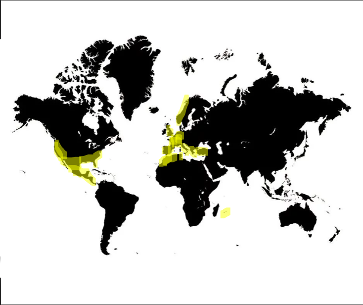

I'm a third year Student at IESEG SCHOOL OF MANAGEMENT. I'm looking for an intership in négociations and international sales. I'm president of the association IESEG OUTDOOR, and I'm practicing sportive shooting, volleyball and airsoft. I really enjoy travelling arround the world.
Discover IESEG's websiteSince December I'm the president of IESEG OUTDOOR, which is an association in my school, IESEG outdoor is in charge of organizing events outside the school for the students (like running, paintball, go kart etc...). I'm in charge of a team of 12 people.
Since September I'm an active member of a shooting club, I like shooting because it teaches me calm, patience and perseverence
I have been playing volleyball for the team of my school for 3 years. It's really nice to share moments with a team !
I have been playing airsoft for 3 years now, and I'm an active member of club, in which I organize games with a team of 15 people.
I really like to travel abroad since I was born, as my parents made me travel a lot. I have been in exchange for 5 months in Guadalajara, Mexico, 1 month in Cambridge, England, and 2 weeks in Norway. Below you can find a map with all the places I have been to.
